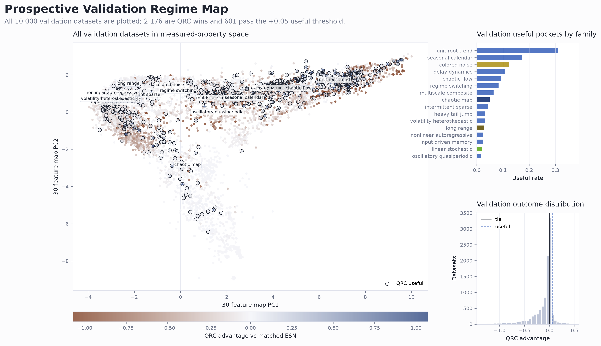
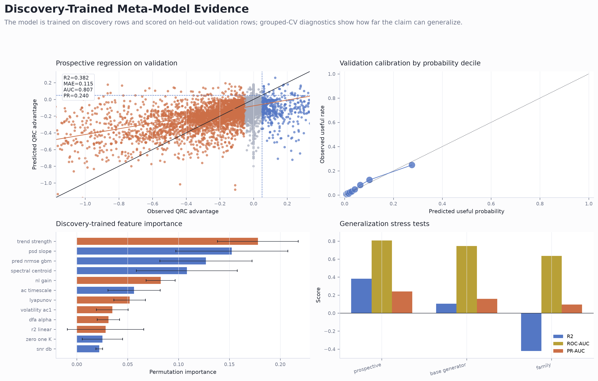
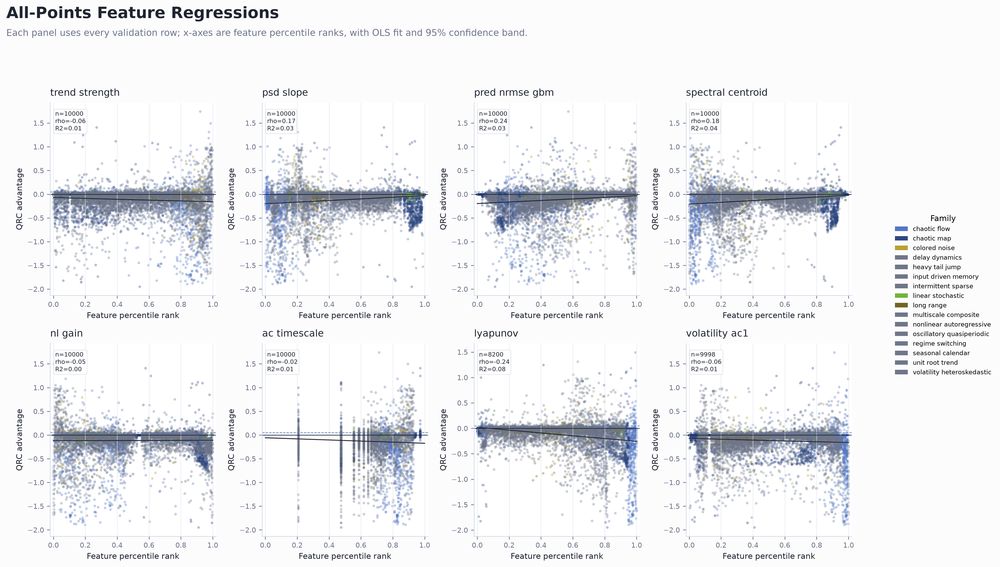
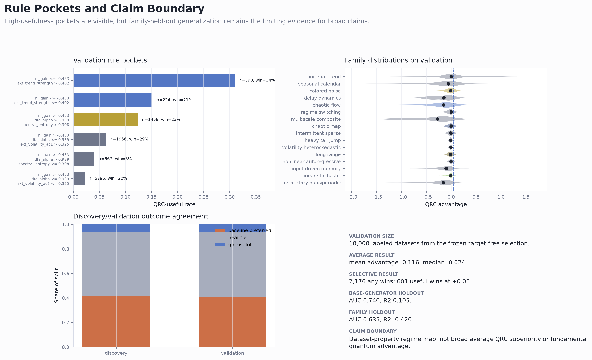

Frontier 01 Validation Regime Map
All validation rows in 30-feature space with family useful rates and advantage distribution.

Frontier 02 Prospective Meta Model
Prospective prediction, calibration, feature importance, and grouped validation diagnostics.

Frontier 03 All Points Feature Regressions
All validation points plotted against the top meta-model features with regression bands.

Frontier 04 Rules And Claim Boundary
Rule pockets, family distributions, split agreement, and claim-boundary diagnostics.
